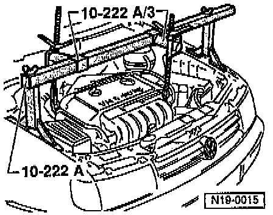

Engine Carrier Mountings
REMOVAL
1. Disconnect high-voltage cables from ignition coil and unclip from cable guide -2-.
2. Remove cable guide -2-.
3. Disconnect vacuum hose between upper intake manifold and fuel pressure regulator.
4. Remove Intake Air Temperature (IAT) sensor from upper intake manifold.

5. Mount engine support bridge tool No. 10-222 A with engine support adapter 10-222 A/3, or equivalents to vehicle.
6. Locate support bridge in lifting eyes on left and right of cylinder head and take-up weight of engine.
7. Remove engine carrier.
NOTE: On models with A/C, remove any A/C components attached to engine carrier.

8. Remove washers from spacer sleeves with pliers (replace any washers that are damaged, e.g. bent washers).
9. Pull out spacer sleeves and detach rubber mount.
INSTALLATION
1. Install new rubber mount and insert spacer sleeves as far as possible.

2. Install washers -1- over peening tool No. 3302, or equivalent, and onto rubber mount -2-.
3. Place sleeve of peening tool in position and, using a shop press, press washers onto spacer sleeves and peon.
4. Use tube tool No. VW 432, or equivalent, as backing.
5. Remove any resulting protrusion/burr on the peening.
6. Reverse remaining removal procedure to install.